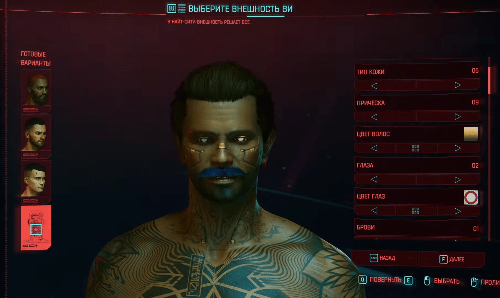

Ключевые особенности игры
Кастомизация персонажа
Игроки могут настраивать своего персонажа по своему усмотрению, выбирая внешность и способности.
Открытый мир
Найт-Сити — это огромный открытый мир, полный приключений и возможностей.
Многопользовательский режим
Игра предлагает многопользовательский режим с различными активностями.